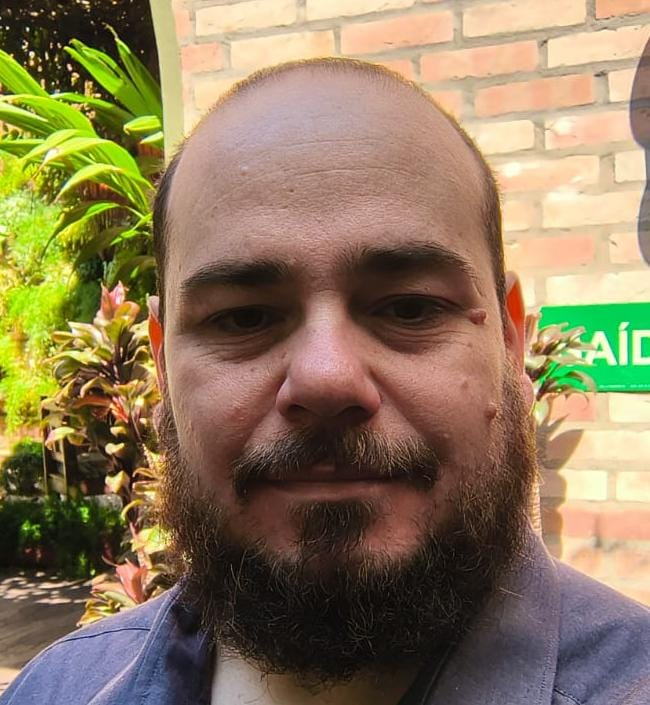
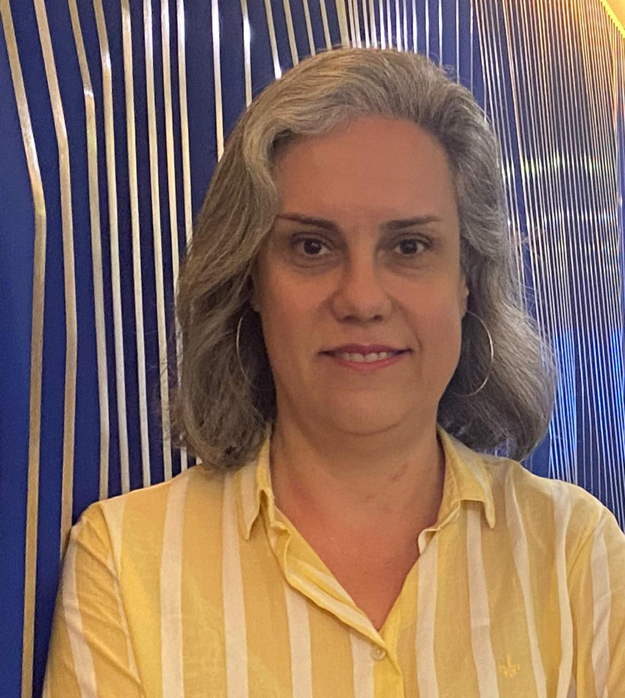
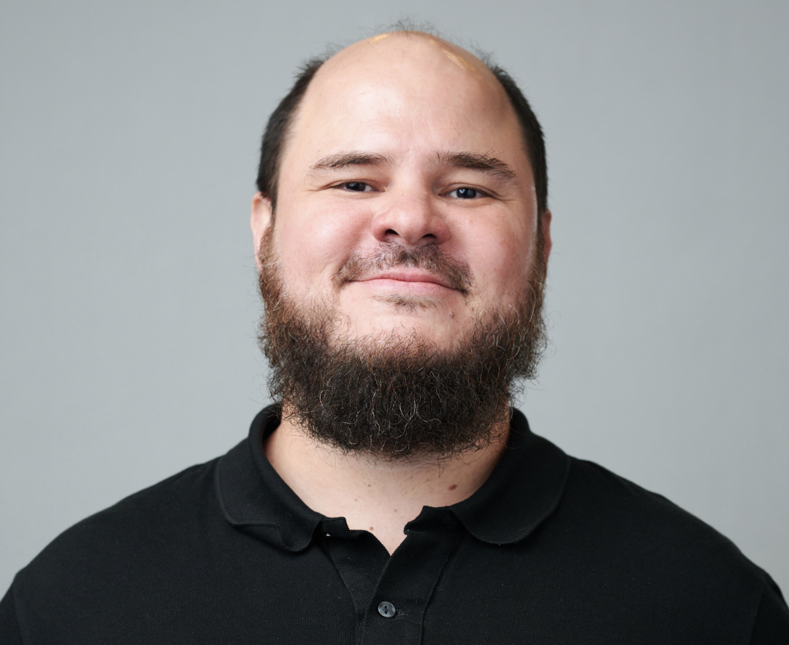
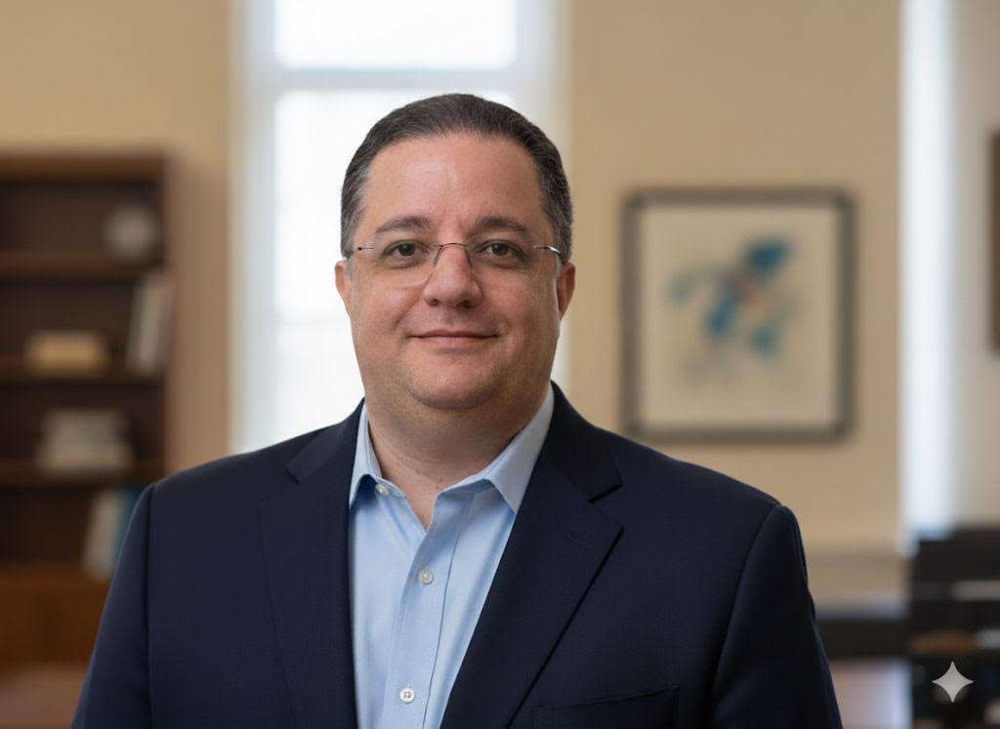
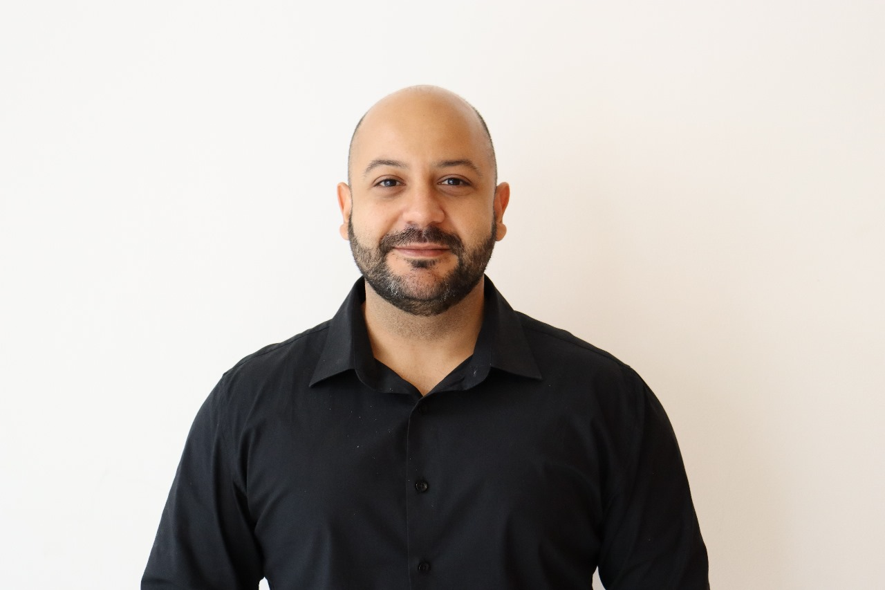

A Quantum Brasil e CESAR se uniram para organizar a edição brasileira do Qiskit Fall Fest 2025, que será tanto online quanto presencial!
Participe Online, presencial ou nos dois formatos.
O lado presencial do evento está sendo organizado com o apoio da LACQ Feynman e das seguintes ligas, instituições e universidades:
•CESAR •QUASAR (UFPB) •LACQ UEA •LACQ USP •LACQ UTFPR •LACQ PUC RS •LACQ UFRGS •LACQ - Belém •LACQ UNISO •LACICA Universidade do Vale do Rio doce •UPE •UFPE
Jogue presencialmente o Boardgame entanglion (desenvolvido pela IBM) e assista palestras, aulas e workshops sobre computação quântica, online.
Para estudantes, profissionais de TI, entusiastas de ciência, e interessados em explorar o futuro da computação quântica.
Palestras e atividades interativas de programação de computadores quânticos.
Certificado para compor o seu currículo e comprovar a sua participação.
Cronograma
18/10 - Sábado
Abertura Oficial do Qiskit Fall Fest Brasil 2025
14h30 - Fabrício Kolk, Pamela Bezerra, Wilson Oliveira, Maria Krüger e Jorge Araújo
20/10 - Segunda-Feira
Aula 1: Introdução à Computação Quântica
18h30 - Pamela Bezerra e Jorge Araújo
22/10 - Quarta-Feira
Aplicações de Computação Quântica em Diversos Setores
18:30 - Rogerio Ruivo e Carlos Speglich
Das Redes Neurais Clássicas às Redes Neurais Quânticas: discussões sobre o mundo quântico na IA
19:30 - Prof Fernando Neto
Impacto da Computação Quântica na Cibersegurança
20:30 - Prof Anderson Santos
24/10 - Sexta-Feira
IA e Computação Quântica: A Revolução da Próxima Fronteira
17h30 - Ana Paula Appel
Tecnologias Quânticas em ação: Da pesquisa à geração de negócios
18h30 - Guilherme Muse
28/10 - Terça-Feira
O estado atual dos computadores Quânticos e Roadmap da IBM
18h30 - Carlos Rischioto
Aula II: Introdução à Computação Quântica - Qiskit
19h30 - Fabrício Kolk
29/10 - Quarta-Feira
Quantum Dual Use Technology: an ethical approach
18h30 - Jullyano Lino
Uma breve Luz sobre tecnologias quânticas
19h30 - Gabriel Dias e André Vilela
30/10 - Quinta-Feira
Entendendo a Transformada de Fourier Quântica
18h30 - Nestor Diadamo Junior
Projeto Quanta
19h30 - Daniel Felinto
01/11 - Sábado
Painel: Oportunidades e desafios na capacitação e divulgação científica na área de computação quântica
14h30 - Anderson Buarque, Everton Dias, Fernando Caletti e Luiz Augusto
Programação da Abertura
18/10 - Sábado
Abertura Oficial do Qiskit Fall Fest Brasil 2025
14h30 - Fabrício Kolk, Pamela Bezerra, Wilson Oliveira, Maria Krüger e Jorge Araújo
Programação
20/10 - Segunda-Feira
Aula 1: Introdução à Computação Quântica
18h30 - Pamela Bezerra e Jorge Araújo
22/10 - Quarta-Feira
Aplicações de Computação Quântica em Diversos Setores
18h30 - Rogerio Ruivo e Carlos Speglich
Das Redes Neurais Clássicas às Redes Neurais Quânticas: discussões sobre o mundo quântico na IA
19h30 - Prof Fernando Neto
Impacto da Computação Quântica na Cibersegurança
20:30 - Prof Anderson Santos
24/10 - Sexta-Feira
IA e Computação Quântica: A Revolução da Próxima Fronteira
17h30 - Ana Paula Appel
Tecnologias Quânticas em ação: Da pesquisa à geração de negócios
18h30 - Guilherme Muse
28/10 - Terça-Feira
O estado atual dos computadores Quânticos e Roadmap da IBM
18h30 - Carlos Rischioto
Aula II: Introdução à Computação Quântica - Qiskit
19h30 - Fabrício Kolk
29/10 - Quarta-Feira
Quantum Dual Use Technology: an ethical approach
18h30 - Jullyano Lino
Uma breve Luz sobre tecnologias quânticas
19h30 - Gabriel Dias e André Vilela
30/10 - Quinta-Feira
Entendendo a Transformada de Fourier Quântica
18h30 - Nestor Diadamo Junior
Projeto Quanta
19h30 - Daniel Felinto
Programação de Encerramento
01/11 - Sábado
Painel: Oportunidades e desafios na capacitação e divulgação científica na área de computação quântica
14h30 - Anderson Buarque, Everton Dias, Fernando Caletti e Luiz Augusto
Palestrantes

Jullyano Lino

Bacharel em Ciência da Computação (UFPI), pós-graduado em Computação Quântica (UniRitter), pós-graduando em Comunicação Quântica (SENAI/CIMATEC) e bacharelando em Matemática (Uninter). Publicou sobre sensoriamento quântico (RADAR & LIDAR) aplicado à defesa nacional (ITA, 2023 & Revista Spectrum, 2025). Divulga a segurança cibernética quântica (MindTheSec, 2023), traduz a documentação oficial do IBM Qiskit e pesquisa ameaças e vulnerabilidades de protocolos quânticos. Analista de segurança da informação (CISSP & C|TIA) na ENAP e participante de desafios de computação quântica (IBM, QWorld) e de cybersecurity (CTF).

Gabriel Dias
Gabriel Dias Carvalho (Ph.D. Física) possui bacharelado e mestrado em Física pela Universidade Federal de Pernambuco (UFPE) e doutorado em Física pelo Centro Brasileiro de Pesquisas Físicas (CBPF). Realizou pós-doutorado na UFPE e na Universidade Federal Fluminense (UFF) e atualmente é Professor Adjunto do curso de bacharelado em Física de Materiais da Escola Politécnica de Pernambuco (POLI), Universidade de Pernambuco (UPE). Dr. Gabriel é responsável pelos cursos de Computação Quântica e Informação Quântica para estudantes de Física e Engenharia. A sua investigação situa-se na intersecção da teoria da informação quântica e dos fundamentos da mecânica quântica e estatística, centrando-se no papel dos graus de liberdade inacessíveis, formalizados através de subsistemas generalizados, na emergência da classicidade. Ele tem experiência em modelos de computação quântica baseados em circuitos e está empenhado em contribuir tanto para a compreensão teórica quanto para o avanço das tecnologias de computação quântica.

Fernando M. de Paula Neto
Fernando M. de Paula Neto é Professor do Centro de Informática da UFPE e pesquisador nas áreas de Computação Quântica e Inteligência Artificial. É membro coordenador do grupo de pesquisa acadêmica em Computação e Informação Quântica da UFPE (qCIn-UFPE) e coordenador da Liga Acadêmica de Computação e Informação Quântica (LACIq-UFPE). Sua pesquisa explora algoritmos e circuitos quânticos, aprendizagem de máquina quântica, sistemas quânticos abertos e interpretação de modelos inteligentes.

Rogerio Ruivo
Diretor de Tecnologias da DOBSLIT, uma das pioneiras em Computação Quântica no Brasil, Rogerio liderou a introdução do primeiro computador quântico educacional no país, instalado no SENAI São Paulo, e colaborou em projetos inéditos com Embraer e EBSE. Com mais de 25 anos de experiência em Tecnologia da Informação, atua na convergência entre inovação, indústria e pesquisa aplicada.

Carlos Speglich
Engenheiro Físico formado pela UFSCar, com intercâmbio na Fachhochschule Gelsenkirchen (Alemanha), Carlos possui experiência em pesquisa nas áreas de Nanotecnologia e Biotecnologia. Atuou em projetos de inovação na Petrobras e é fundador da DOBSLIT, primeira empresa brasileira a executar um projeto economicamente viável em Computação Quântica entre empresas.

Daniel Felinto
Daniel Felinto é doutor pela Universidade Federal de Pernambuco (UFPE). Depois de pós-doutorados na Universidade de São Paulo e Caltech (EUA), se juntou novamente à UFPE em 2006 como professor permanente. Sua pesquisa é focada em aplicações de óptica e física atômica em informação e tecnologia quântica, usando técnicas de átomos frios, controle ultrarrápido e óptica quântica. Ele coordena o Laboratório de Redes Quânticas da UFPE e, presentemente, também os projetos para construir uma rede quântica metropolitana em Recife e instalar o Instituto de Tecnologias Quânticas da UFPE. Em 2024, ajudou a fundar a QWeb, empresa dedicada ao desenvolvimento de hardware para internet quântica.

Nestor Diadamo Junior
Entusiasta da Computação Quântica, comecei a estudar no meio de 2023, iniciando com pesquisas sobre o tema e assistindo algumas palestras e aulas na internet, fiz o curso de Quantum Machine Learning da EXTECAMP no final de 2024, e logo no começo de 2025 fiz o curso do TIC em trilhas de Introdução a Computação Quântica. Atualmente estou cursando pós-graduação em Computação Quântica pelo Senai Cimatec e faço parte do grupo de estudos em Computação Quântica do Venturus.

Ana Paula Appel
Ana Paula Appel é Senior AI Specialist Solutions Architect na Red Hat e Quantum Ambassador. Doutora em Ciência da Computação pela USP, possui mais de 15 anos de experiência impulsionando inovação em IA e computação quântica. Durante seus 13 anos na IBM, foi reconhecida três vezes como Master Inventor, com mais de 60 patentes (sendo mais de 30 concedidas). Seu impacto técnico e liderança foram reconhecidos pela Society of Women Engineers (SWE), que destacou suas patentes por cinco anos consecutivos e lhe concedeu o Prism Award em 2024 por 15 anos de contribuições à computação.

André L. M. Vilela
(Ph.D. em Física) é Professor Associado de Física e Principal Investigador do Centro e Laboratório de Simulação em Sistemas Complexos da Universidade de Pernambuco (classico.xyz) e pesquisador no SUNY Polytechnic Institute. Ao longo dos anos, ele têm investigado a Física de Sistemas Complexos, com interesse especial na dinâmica de modelos de agentes interativos, mecânica estatística, transições de fase, fenômenos críticos e análise de tamanho finito, associados à dinâmica de decisões distribuídas, mercados financeiros e teoria de redes complexas, incluindo aplicações em caracterização de dados, resiliência de redes, tecnologias blockchain e inteligência artificial. Sua pesquisa se concentra em revelar os mecanismos matemáticos subjacentes que governam o comportamento de constituintes interagentes no contexto de redes complexas e em compreender como esse comportamento promove fenômenos coletivos emergentes em sistemas sociais, tecnológicos e econômicos.

Cel Veterano Anderson Fernandes Pereira dos Santos - IME/Venturus
Doutor em Modelagem Computacional e especialista em Cibernética, com sólida base em sistemas dinâmicos e computação de alto desempenho (HPC). Possui histórico comprovado em liderança de projetos de pesquisa e infraestrutura tecnológica, sendo o Supervisor responsável pela implantação do primeiro Supercomputador Cray e Cluster Computacional em sua instituição, equipamentos cruciais para a coleta e processamento de Big Data em pesquisa e ensino. Seu trabalho em Modelagem Computacional no LNCC resultou em um modelo não determinístico de detecção de ataques DDoS, expertise diretamente aplicável à Cibersegurança de dispositivos médicos e sistemas de saúde (e.g., proteção contra ataques a prontuários eletrônicos ou equipamentos de telemedicina). Com interesses em Computação Quântica (Pós-doutorado no LNCC) e experiência em implantação de redes locais seguras, combina visão futurista e conhecimento prático para garantir a integridade dos dados, a segurança de dispositivos e a escalabilidade da infraestrutura necessária para a inovação no ecossistema da Saúde Digital.

Guilherme Muse
Doutorando em Engenharia, com ampla experiência em inovação tecnológica. Atua como especialista de negócios no Centro de Competências EMBRAPII CIMATEC em Tecnologias Quânticas (QuIIN), onde lidera iniciativas voltadas ao desenvolvimento e à adoção de soluções quânticas no ecossistema brasileiro. Guilherme possui experiência em jornadas de ideação para tecnologias de fronteira, estratégias de inovação aberta, modelagem de negócios para tecnologias disruptivas e na estruturação de portfólios de valor e benefícios para programas associativos voltados à geração de novas soluções.

Carlos Rischioto
Carlos L Rischioto é Profissional de Tecnologia da Informação há mais de 25 anos. Possui licenciatura plena e bacharelado em Ciência da Computação pela Universidade São Francisco e MBA executivo em gestão estratégica de inovação tecnológica e propriedade intelectual pela UniBF. Hoje é Líder de Inteligência Artificial e Computação Quântica para a América Latina na IBM, sendo especialista em Cloud, Blockchain e Inteligência Artificial É membro do Comitê de Estudo Especias para Blockxhain, IA e Computação Quântica da ABNT (Associação Brasileira de Normas Técnicas), da SBC (Sociedade Brasileira de Computação), da ACM (Association for Computing Machinery) e da IEEE (Institute of Electrical and Eletronics Engineers). Palestrante reconhecido no mercado e mentor de startups no Brasil e EUA. Também é professor universitário desde 2000, atuando em cursos de graduação, pós-graduação e MBAs voltados para tecnologia, lecionando na FIAP, PUCCamp, PUC-MG e IBMEC São Paulo.

Anderson Buarque
Doutor em Física, especialista em informação quântica. Pesquisador sênior do SENAI CIMATEC e lidera as atividades de formação do Centro de Competência Embrapii CIMATEC em Tecnologias Quânticas/QuIIN.

Everton Dias
Professor da CESAR School e atualmente Coordenador de Cursos na área de Tecnologia, participa do grupo de pesquisa Quantum Application in Technology and Software (|QATS>) na área de Educação em Computação Quântica. Licenciado em Matemática e Mestre em Educação Matemática e Tecnológica, tem se dedicado ao estudo de formação de pessoas para a Computação Quântica.

Fernando Caletti
Desenvolvedor de Software Sênior e Pesquisador Líder em Computação Quântica, com background em Eletrônica e Engenharia. Tem interesse especial por Quantum Machine Learning e adora aprender novas tecnologias para resolver problemas complexos.

Luiz Augusto
Com dupla formação em Matemática Pura e Física pela Unicamp e atualmente doutorando em Física no ITA, Luiz Augusto iniciou sua carreira no mercado financeiro, atuando em bancos e gestoras de recursos, onde teve contato direto com os principais desafios computacionais do mundo dos negócios. Atualmente é pesquisador em Computação Quântica no Venturus, professor convidado da Fundação Getulio Vargas (FGV) no MBA em Tecnologias Emergentes, e desenvolve pesquisas de fronteira no ITA, com foco em fundamentos da física, computação quântica e métodos de otimização. Também se destaca como comunicador científico, com mais de 300 mil seguidores nas redes sociais, sendo hoje um dos principais divulgadores de Computação Quântica no Brasil. Por esse motivo, participa ativamente das iniciativas industriais e empresariais sobre o tema, sendo presença frequente como palestrante em workshops organizados por universidades e empresas em todo o país.
Organizadores
Pamela Thays Lins Bezerra
Fabrício Kolk Carvalho
Wilson Oliveira da Fonseca
Maria Angélica Krüger Miranda
Jorge Alexandre de Araújo
Contato: ffestbr24@gmail.com